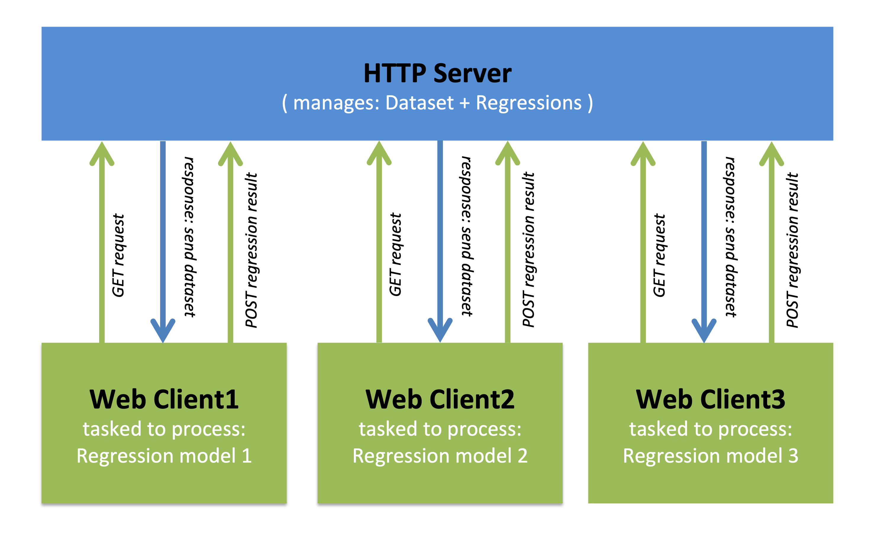

Linear Regression Modeling:Designing & Evaluating a Forest Fire Predictor
0. Introduction
This project has two primary motivations targeted towards Machine Learning:
Goal 1: Pedagogical Applications
Machine Learning and Data Science is a rapidly growing field with many gainful employment opportunities. But for many, the very idea of Machine Learning might as well be magic; powered by some unknowable, arcane, mystic force. To a beginner, the mathematics used in Machine Learning algorithms may be intimidating. However, the basic underlining concepts that drive Machine Learning are actually relatively simple. A goal of this project is to better teach Machine Learning priciples by guiding the reader through an interactive walk-through process, while stepping through and defining many of the design considerations made in crafting a predictor.
This example project aims to illustrate the type of problem statements that are suitable for a Machine Learning approach. And then to walk-through the process of designing, implementing, and analyzing a Machine Learning solution. It serves as an interactive expercience, enabling you to perform analysis via the embedded tools and visulations. Interactivity is important in learning, where user-lead experimentation, allows one to develop their own conclusions and test to verify their understanding of the problem. In other words, one typically best learns by doing, and one typically best understands abstract concepts when mapped to specific examples and use cases.
Goal 2: Practical Applications
This project serves as a Proof-of-Concept in training and testing regression models for execution within the client-side browser run-time environment using Javascript. In general, the browser environment is a subpar platform for running machine learning applications, however its potential capabilities scale incredibly well. In regression modeling, generating different models and evaluating their performance is incredibly well suited for concurrent processing, as each model is independent to all others. So the principal idea behind implementing a solution in JavaScript, is to host the dataset on a HTTP server, and for each client that connects to the HTTP server, give it part of the data along with regression codebase. Let the client calculate a result locally, and then send back result to the server which can then integrate the results together from all other clients. This allows for any computing device equipped with a web browser to join the cluster. The vast scalability across multiple devices should diminish the subpar processing performance that occurs on a single machine using the browser.

1. Technology
This project requires execution within the browser, which limits the options of many common ML technologies and tools.
JavaScript
This project is strictly implemented in JavaScript (ECMA6) as its the only programming language natively supported within the browser run-time environment. The main advantage of JavaScript is portability, as every computing device that has a web browser also has a Javascript runtime environment. Additionally, all javascript applications run directly within the browser without the need of installing new executables.cJavascript applications may also be embedded within a web page containing supporting documentation and graphics. For more info: https://developer.mozilla.org/en-US/docs/Web/JavaScript
Math.js
Math.js is an open-source extensive math library for JavaScript. It supports numbers, big numbers, complex numbers, fractions, units, strings, arrays, and matrices. Its compatible with JavaScript’s built-in Math library and runs on any JavaScript engine. For this project, Math.js was selected for its ability to easily chain Matrix operations, as JS doesn't allow for operator overloading. Additionally, it included some useful statistical functions. For more info: https://mathjs.org
D3.js
D3.js is an open-source, interactive data visualization library for JavaScript. D3 is compatible with all modern browsers without requiring any proprietary frameworks. For this project, D3 was selected for its ability to generate interactive scatter plots, line plots, bar charts, with user controls and animations. All graphs presented are generated with this library. For more info: https://d3js.org
MathJax.js
MathJax.js is a JavaScript library for displaying mathematical symbols within HTML. It uses LaTex syntax and is compatible for all browsers. For this project, all mathemtaical formula displayed is rendered with this library. For more info: https://www.mathjax.org/
Bootstrap
Bootstrap is a free and open-source front-end Web framework. It contains HTML and CSS-based design templates for typography, forms, buttons, navigation and other interface components, as well as optional JavaScript extensions. For more info: https://getbootstrap.com/
2. Problem (Scenario)
This project aims to use a real-world problem thats suitable for a ML approach.
This section, establishes a scenario that simulates the initial problem statement.
Predicting Forest Fire Devastation
Problem Description:
Forest-fire or bushfire is a serious environmental issue, creates economic and ecological damages and threatens human lives in many places in the world such as Arizona, Australia, Argentina, Canada, New Zealand, Portugal etc. Fast detection or, prediction can help firefighters greatly and reduce casualties. Further, if the size of the affected area can be predicted at the same time, it will provide an estimation of resources required to fight the fire.
Forest Fire Prediction: we will develop model(s) for predicting forest fire from given datasets.
3. Dataset
This section details the initial dataset and strategies on how to use it effectively
Dataset Selection
The possible major resources-categories to collect data to build-up a prediction model can be:
(a) satellite-based datasets
(b) setup remote-sensors and collect sensor datasets
(c) collect meteorological datasets.
Since automatic meteorological stations are often available and the dataset is available at a lower cost - we will develop a model based on the meteorological dataset.
Dataset Description
The given data has 517 instances – each data point is 12 dimensional and the output column (13th column) is the burned area given in hectors (ha). The features or attributes including the output (burned) “area” are given in the table below.
Table-0:Dataset Features:Historical Forest Fire Records & Measurements
#
Feature
Description
Range
1
X
x-axis spatial coordinate of a park map
1 to 9
2
Y
y-axis spatial coordinate of a park map
1 to 9
3
Month
month of the year
'jan' to 'dec'
4
Day
day of the week
'mon' to 'sun'
5
FFMC
Fine Fuel Moisture Code
18.7 to 96.20
6
DMC
Duff Moisture Code
1.1 to 291.3
7
DC
Drought Code
7.9 to 860.6
8
ISI
Initial Spread Index
0.0 to 56.10
9
temp
temperature in Celsius degrees
2.2 to 33.30
10
RH
relative humidity in %
15.0 to 100
11
wind
wind speed in km/h
0.40 to 9.40
12
rain
rain in mm/m2
0.0 to 6.4
13
area
the burned area of the forest (in ha)
0.00 to 1090.84
Formatting Dataset
The dataset is in CSV format. Since the target platform is the browser application, then the data must first be converted into JSON format. The 517 data rows are instantiated as key-value objects, and pushed into an array. This allows the data to be stored client-side, without having to be hosted remotely. By default, other file formats cannot normally be be opened locally through a browser due to default security settings (i.e. cross-site scripting). For the JSON dataset: data.js
Normalize Dataset
Data normalization is the process of rescaling the values of a feature to be between 0-1. The purpose of normalizing data scales the numberical values down for computational efficiency. Data normalization should occur when training a predictor, and then the selected model can be trained on unaltered dataset to deliver to end users.
Normalization (Mathematics)
$x' = {x \, - \, \text{min } x \over \text{max } x \, - \, \text{min } x} $
Explanation: Given a feature $x$ in the dataset, then every x value from that feature-column must be normalized between 0-1. The normalized value ($x'$) can be calculated as the ratio between:
difference between current x & minimal x
difference between maximum x & minimal x
Note that after normalization is performed, the minimal x=0, and the maximal value of x=1;
Normalize Dataset (Javascript)
/* Normalize dataset with values between 0 to 1. */
const normalize = (val, min, max) => (val - min)/(max - min);
Explanation: The normalize function takes in a current value, minimal value, maximal value as numerical parameters and calculates then returns the normalized value.
const normalize_feature = function(dataset, feature){
let max = d3.max(dataset, d => d[feature] );
let min = d3.min(dataset, d => d[feature] );
dataset.forEach( d => d[feature] = normalize( d[feature], min, max) );
}
Explanation: The normalize_feature function normalizes all values of a feature. The function takes in a dataset (object array) and a feature (string). The D3.js library contains methods that return the min and max values from a dataset. Iterate over every value of feature in dataset array and reassign it with the normalized value.
Explanation: The normalize_dataset function normalizes all features in the dataset. The function takes in a dataset (object array) and a featureList (string array). Iterate over every feature and invoke the normalize_feature function.
Training/Testing Strategy
define metric for comparisons: training (used) vs testing (not used)
k-fold validation
You typically need a dataset to train your predictor, and another to test your predictor.
Test data is not separately provided; therefore, you will apply 10-fold cross-validation (FCV).
Balancing k-fold sets
Balancing Folds in JS
Notes: detail how I performed this in Javascript such that it can execute in browser runtime environment. Note, balanced chunkings of dataset, such that minimal discrepancy for any one dataset is at most 1 row.
define metric for comparisons: training (used) vs testing (not used): k-fold validation
Notes: detail how I performed this in Javascript such that it can execute in browser runtime environment. Note, balanced chunkings of dataset, such that minimal discrepency for any one dataset is at most 1 row.
/**
* Shuffles array in place. ES6 version
* @param {Array} a items An array containing the items.
*/ functionshuffle (
arr ) {
for
(
let i
= arr.
length-1; i
> 0; i
--) {
const j
=Math.
floor(
Math.
random()
* (i
+1)
);
[arr[
i
], arr[
j
]]
=
[arr[
j
], arr[
i
]];
}
return arr;
}
functionchunkify(
arr,
n
) {
let out
= [];
let i
=0;
while (i < arr.length) {
let size = Math.ceil( (arr.length - i) / n-- );
out.push( arr.slice(i, i += size) );
}
return out;
}
/*
* Generate K-Fold subset Datasets
*/
function getKFolds(dataset, k){
shuffle(dataset)
let kFolds = chunkify(dataset, k);
return kFolds;
}
4. Approach
This section details the initial considerations in constructing a predictor and why a regression model is suitable choice.
Supervised Learning
Build a predictor with data that is known.
Regression Model
Math behind is point-intercept form.
Machine Learning Selection:
Supervised learning approach
Linear regression technique.
Given the data as independent set of inputs/variables/features.
We can create output in form of a point-slope equation.
That will serve as our predictor.
Considerations:
5. Feature Ranking
Feature evaluations.
Metrics
Feature Selections
define metric for comparisons
measuring correlation, what is it, (not causation, don't care why)
quantitative vs qualitative
quantitative (continuous) → PCC -1 to 1 but abs(0,1)
qualitative → non-uniform distributions 0-1
Thus they are in same scope, so similar metrics, and thus may be related, measured against one another
{from white board}:
discriminate/id the qualitative vs quantitative data
Find correlation between input and outputs
Rank features using a metric
Quantitative: PCC
Qualitative: % occurence
Data visualization considerations
Table 1 ranking of correlations
Graph-1 12 scatter plots showing correlation between features/result
Rank the Features
Rank the features by computing the correlation between i and j,
where i is any one of the features from 1 to 12, and j = 13th feature.
Computed all the 12 correlation values and place them in Table #1
[Feature id (1 to 12), correlation value] in descending order of the absolute value of the correlation, in your report. Plot the correlation graphs (Graphs #1 to 5) for the top 5 input features.
Metric: Correlation, not Causation
A powerful concept that drives these regression models, is that the machine does not need to know why two features may correlate in some way, that just when they do, we can use that observation to build a predictor. It is not a claim that feature A causes result B to occur. But rather, when feature A occurs, then we can expect this result B to likely occur. This frees us from the burden of justifying causation. In this way, we can be agnostic to what the features mean at all, and instead just focus on the patterns they produce as the tool to build a predictor. This ability to remove the context of knowledge from the problem allows this process to be automated into a computational endeavor.
Qualatative vs. Quantative
Each feature may present itself as one of two different types: Qualatative data and Quantative data. Qualatative data is catagorical and discrete. It typically appears in datasets as a set of labels (text) or countable integers (numbers). The qualatative features in this dataset are: X, Y, day, month. Quantative data is real numerical values and continuous. It typically appears in datasets as real numbers. The Quantative features in this dataset are: FFMC, DMC, DC, ISI, temp, RH, wind, rain.
Correlation is defined differently between Qualatative features and Quantative features.
Assessing Quantative Correlation
Peasron Correlation Coefficient
In statistics, the Pearson correlation coefficient is a measure of the linear correlation between two variables X and Y. It has a value between +1 and −1, where 1 is total positive linear correlation, 0 is no linear correlation, and −1 is total negative linear correlation. It is widely used in machine learning. Pearson Correlation Coefficient is only a viable metric for
Definition
Pearson's correlation coefficient is the covariance of the two variables divided by the product of their standard deviations. The form of the definition involves a "product moment", that is, the mean (the first moment about the origin) of the product of the mean-adjusted random variables; hence the modifier product-moment in the name.
Mathematics
Given a pair of random variables ${\displaystyle (X,Y)}$ (X,Y), the formula is:
${\displaystyle \rho _{X,Y}={\frac {\operatorname {cov} (X,Y)}{\sigma _{X}\sigma _{Y}}}}$ ${\displaystyle \rho _{X,Y}={\frac {\operatorname {cov} (X,Y)}{\sigma _{X}\sigma _{Y}}}}$
(Eq.1)
where:
${\displaystyle \operatorname {cov} } \operatorname {cov}$ is the covariance
${\displaystyle \sigma _{X}} \sigma _{X}$ is the standard deviation of ${\displaystyle X}$ X
${\displaystyle \sigma _{Y}} \sigma_Y$ is the standard deviation of ${\displaystyle Y}$ Y
Assessing Qualatative Correlation
For catagorical data, the best approach to determine correlation is to observe the number of instances where the result occurred, and determine if their is a significant non-uniform distrubtion. this occurence - total uniform occurence, the result is the correlation of that one catagory.
Table-1:Feature Evaluations:Ranked by Correlations to Burned Area
Rank
Feature
Target
Correlation
Graphs 1-12:Feature Evaluations:Show Correlations between Feature & Burned Area
Plot Options:All Data | Remove Outliers
/** Compute Pearson's correlation coefficient */
var computePearsons = function (arrX, arrY) {
var num = covariance(arrX, arrY);
var denom = d3.deviation(arrX) * d3.deviation(arrY);
return num / denom;
}
/** Computes the covariance between random variable observations
* arrX and arrY
*/
var covariance = function (arrX, arrY) {
var u = d3.mean(arrX);
var v = d3.mean(arrY);
var arrXLen = arrX.length;
var sq_dev = new Array(arrXLen);
var i;
for (i = 0; i < arrXLen; i++)
sq_dev[i] = (arrX[i] - u) * (arrY[i] - v);
return d3.sum(sq_dev) / (arrXLen - 1);
}
/* Get all the values from a column in a dataset */
var getFeatureData = function(dataset, feature){
return dataset.map( d => d[feature]);
}
var getPCC = function(dataset, feature, index){
let x = getFeatureData(dataset, feature);
let y = getFeatureData(dataset, 'area')
let result = computePearsons(x,y);
return result;
}
6. Generate Models
This section provides interactive tools to generate regression models then explains how they are built
Generate Regression Models
Here are some suggested regression models that may be used as baseline models for comparators.
They have been pre-configured and may be generated. Feel free to generate all of these default
regression models. Note that the higher-order models may take a few minutes to build, and that this web application will become inactive during the build process.
Interactive Predictor Generator
Models Generated:
No models are currently generated.
Instructions
Select features from feature list and select a polynomial order.
Then press build and see how your model compares.
This is an interactive regression generator, that builds various linear models of each polynomial type and then populates results in the tables and graphs in the following sections. Customizable options are provided for: model order, feature list, and regularization. Whenever a model is generated, its performance is automatically evaluated and ranked on the error report on table-2: Model Evaluations. It is possible to generate many models with identical selections, which may result in different errors, all of these will appeat in the tables and graphs.
Model Prediction Explained
Models or learners will be generated using the non-iterative equation,
$$\beta = \text{inv}(X'*X)*X'*Y$$
with customizable options:
const make_model = function(dataset, yValue, featureList, model_order){
let Y = getY(dataset, yValue);
let X = getX(dataset, featureList, model_order);
let B = getB(X,Y);
let model = {
'B': B,
'order': model_order,
'features': featureList,
'yLabel': yValue,
'name': 'M'+model_order
};
return model;
}
/* get Y Vector */
const getY = (dataset, yVal) => math.matrix( dataset.map(d => d[yVal]) );
/* Get X Matrix */
const getX = function(dataset, featureList, model_order){
let arrays = [];
let x0 = new Array( dataset.length ).fill(1)
arrays.push( x0)
for (let feature of featureList){
for (let pow=1; pow<=model_order; pow++){
arrays.push( (dataset.map( d => d[feature])).map(x => x**pow) );
}
}
let X = math.chain(arrays)
.matrix()
.transpose()
.done();
return X;
}
/* Get B Vector (i.e. coefficients) where: B = inv(X'*X)*X'*Y */
const getB = function(X,Y){
let B = math.chain(X)
.transpose()
.multiply(X)
.inv()
.multiply(math.transpose(X))
.multiply(Y)
.done()
return B;
}
Regression Model
#
Feature
$\beta$
7. Model Ranking
Model evaluation
Metrics
Model Selections
define metric for comparison
may build unlimited number of models, how to decide which is best?
Generate Models
Table 2- List of generated models
Describe process/details
Describe options
poly selection
feature selection
may generate multiple of same model
why? → variance/spread of general error
give math behind models → hide
give code behind models → hide
compare them to one another see which has best prediction or least error
MAE
MRSE
k-fold cross validation allows us to test multiple times and find general error
Data visualization considerations
Table-3 - Interactive Table, sorting columns, hide/display all folds data
Graph-2 Interactive Plots show error for each model using features as key
X-axis → model order
Y-axis → error rate (Mae, Mrse)
Table-3 Collapsable
Performance Evaluation and Error Calculation
We will evaluate the perfomance of each of the models by computing mean-absolute-error (MAE) and root-mean-squared-error (RMSE). MAE and RMSE are computed as:
const calculateMAE = function(Y, X, B){
let residual = calculateResidual(Y, X, B);
let n = residual.length;
let rsa = residual.reduce( (total, item) => total += Math.abs(item) )
return rsa/n
}
const calculateRSME = function(Y, X, B){
let residual = calculateResidual(Y, X, B);
let n = residual.length;
let rss = residual.reduce( (total, item) => total += item**2 )
return Math.sqrt( (rss/n) )
}
Ten-Fold Cross Validation
/*get all subsets data, not including the testing set*/
getTraining = (arr, test) => flatten( arr.filter( d => d !== test ));
/*flattens a multi-dimensional array into a 1d array*/
flatten = (arr) => [].concat(...arr);
/*Train Model*/
const crossValidation = function(dataset, featureList, model_order, yValue){
let fold10 = getKFolds(dataset, 10);
let results = [];
let model;
for(i in fold10 ){
let testingData = fold10[i];
let trainingData = getTraining(fold10, testingData)
model = trainRegressionModel(trainingData, featureList, model_order, yValue);
let error = testRegressionModel(testingData, model);
results.push(error)
}
return model;
}
const trainRegressionModel = function(trainingData, featureList, model_order, yValue){
let model = make_model(trainingData, yValue, featureList, model_order);
return model;
}
var testRegressionModel = function(testingData, model){
let testingY = getY(testingData, model.yLabel);
let testingX = getX(testingData, model.features, model.order);
let rsme = calculateRSME(testingY, testingX, model.B);
let mae = calculateMAE(testingY, testingX, model.B);
return {'rsme':rsme, 'mae': mae};
}
For each Model (M=1...6, YC) Table #2 will have M=i, average (avg) and
standard deviation (SD) of MAE of the 10FCV, avg., and SD of RMSE of the 10FCV in each row -
in the experiment all the 12 input features will be included. Include Table #2 in your
report. Now use the top 5 input features for your experiment and similarly generate Table #3.
Plots: Plot Graph#6 and Graph#7 for: (a) Models (M=1...6, YC) versus MAE,
(b) Models (M=1...6, YC) versus RMSE where the models were trained using 12 input features.
Similarly, provide Graph#8 and Graph#9 for models those are built using top 5
input features only.
Graph-13:Models vs. MAE(Error Plots)
No models exists to show error.
Graph-14:Models vs. RMSE(Error Plots)
No models exists to show error.
8. Model Regularization
Regularization
Metrics
Regularization
Motive: High polynomial models
define metric for comparison: lambda
PART (B)
Regularization:
For a model of order M=6 and YC, you need to apply the regularization using the non-iterative
equation: $\beta = \text{inv}(\mathbf{X}^T\mathbf{X}+\lambda M_{\lambda})^{-1} \mathbf{X}^T\mathbf{y}$, where $M_{\lambda}$ is the identity matrix with $M_{\lambda}(1,1)=0$,
and lambda ($\lambda$) is the regularization parameter. Compute the models for,
$\lambda=$ (a) 0 (which you have already computed in PART(A)), (b) 0.5E-8, (c)1.5E-6,
(d)2.0E-4, (e) 1 and (f) 2. Compute the Errors as we have done in PART(A) and plot for
"$\lambda$ versus the MAE" and "$\lambda$ versus RMSE" for both 12 input features as well as
5 top input-features based models as we have done in PART(A).
Important Note: you may need to apply $ln \lambda$ along the x-axis for plotting as well
as you may need to do the same along the y-axis.